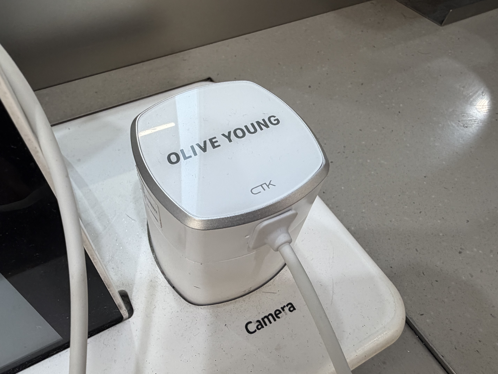
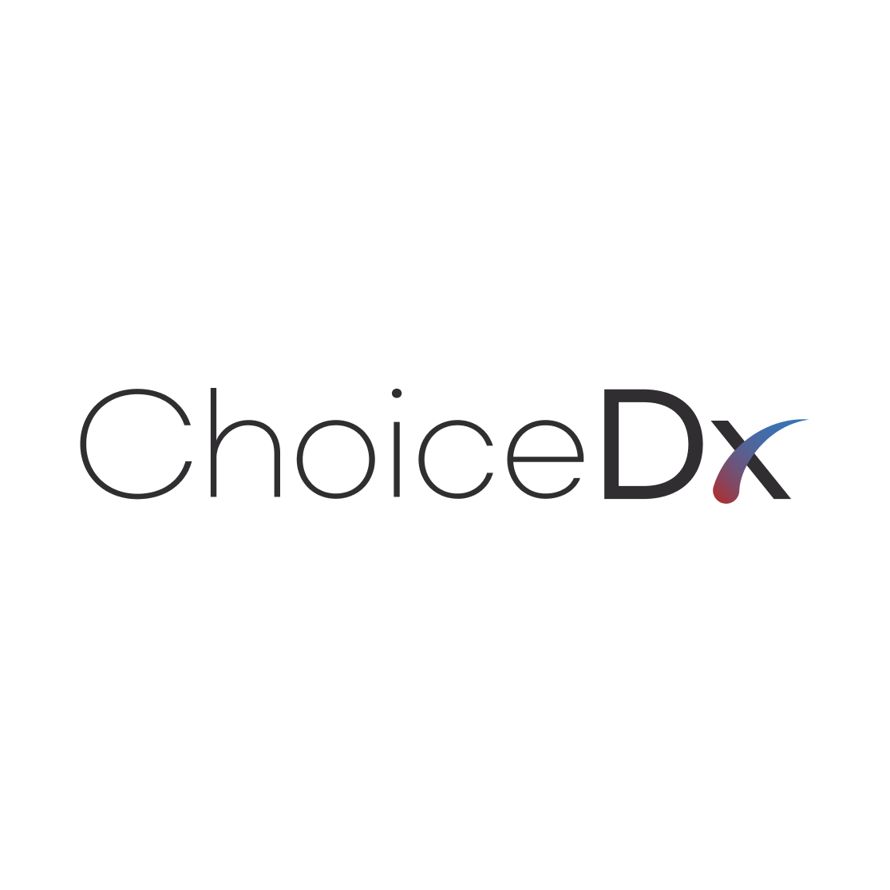

从感受型咨询到数据驱动咨询
美妆零售咨询长期依赖顾客表达和顾问经验。顾客会描述干燥、出油、敏感、暗沉等感受，顾问则根据经验推荐产品。
但随着门店客流和顾客触点增加，保持咨询质量一致变得更困难。数据驱动咨询可以把主观困扰连接到检测结果，让顾问用更一致的依据进行说明。
重点不是展示更多数据，而是把数据转化成顾客能理解的咨询语言。

皮肤检测仪建立共同参考标准
皮肤检测仪为门店咨询建立起点。顾客和顾问可以看着同一屏幕、同一报告和同一指标开始对话。
AI 皮肤分析会把水分、油脂、毛孔、肤色、敏感度等指标整理成咨询依据。顾问可以把顾客困扰和检测结果连接起来，说明产品类别为什么相关。
设备不是为了取代顾问，而是帮助顾问更清楚地解释。


数据如何让产品推荐更有说服力
顾客希望知道为什么某个产品适合自己。没有数据的推荐容易被理解成促销，而与检测结果连接的推荐会更像个性化建议。
如果低水分和敏感同时出现，顾问可以说明舒缓与屏障护理，而不只是补水。如果出油和毛孔困扰同时出现，则可以优先说明清爽质地和油脂平衡产品类别。
数据驱动咨询不是推荐更多产品，而是让推荐理由更清楚。

为什么门店运营需要数据咨询
从门店运营角度看，数据咨询有助于标准化咨询质量。新员工可以根据诊断结果完成更稳定的说明流程，资深顾问则可以利用数据提供更深入的咨询。
门店还可以了解哪些困扰更常见、哪些产品类别与之相关、哪些顾客对复访比较更感兴趣。
这些信息比单纯销售记录更丰富，因为它反映了顾客在门店中感受到什么，以及正在寻找什么解决方案。
从复访比较到 CRM
数据驱动咨询的价值不会停留在第一次到店。比较前后诊断结果时，顾客可以理解自己的护理习惯正在如何变化。
门店可以基于这些比较数据设计复访咨询、会员权益、个性化活动和季节性产品推荐。
因此，数据咨询可以把一次检测体验扩展为顾客关系管理触点。

ChoiceDx 观点
ChoiceDx 将数据驱动咨询视为让美妆零售咨询更可解释的体验，而不是医疗判断。
当 AI 皮肤分析、皮肤检测仪、门店报告、产品推荐和复访比较连接成一个流程时，顾客更容易理解推荐，门店也能建立更一致的咨询质量。
对 B2B 零售商、化妆品品牌和美妆门店运营者来说，数据驱动咨询支持顾客信任、品类扩展和复访管理。

FAQ
数据驱动咨询与传统咨询有什么不同？
它把顾客的主观困扰连接到检测结果，让顾问能够用更一致、更可解释的方式推荐产品。
数据太多会不会让咨询变复杂？
如果直接展示，可能会复杂。关键是把数据整理成顾客能理解的语言和产品推荐流程。
ChoiceDx 数据咨询是医疗诊断吗？
不是。ChoiceDx 提供的是用于美妆零售咨询和产品推荐支持的 AI 分析体验。